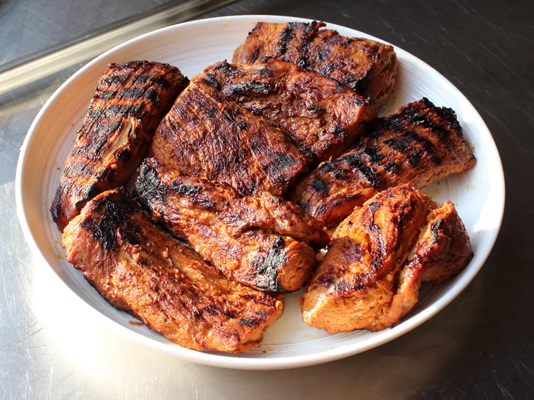

Yucatan-Style Grilled Pork

Description
A 3-citrus marinade gets kicked up with minced garlic, annatto, brown chipotle, cumin, cayenne, oregano, black pepper and salt
Ingredients
- 2 oranges, juiced
- 2 lemons, juiced, or more to taste
- 2 limes, juiced, or more to taste
- 6 cloves garlic, minced
- 1 tablespoon kosher salt
- 1 teaspoon annatto powder, or more to taste, plus more to sprinkle on before grilling
- 1 teaspoon ground dried chipotle pepper
- 1 teaspoon ground cumin
- ½ teaspoon cayenne pepper
- ½ teaspoon dried oregano
- ½ teaspoon freshly ground black pepper
- 2 pork tenderloins, trimmed
- 1 tablespoon vegetable oil
Home